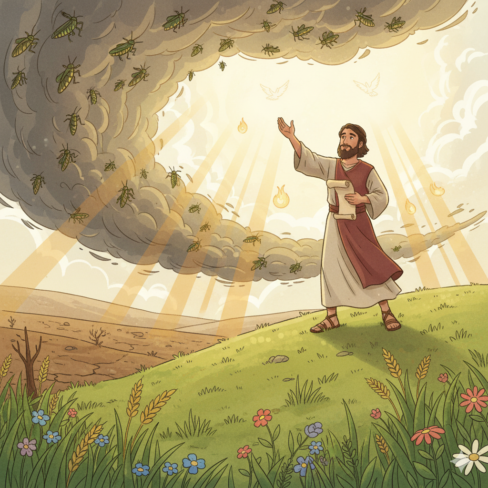
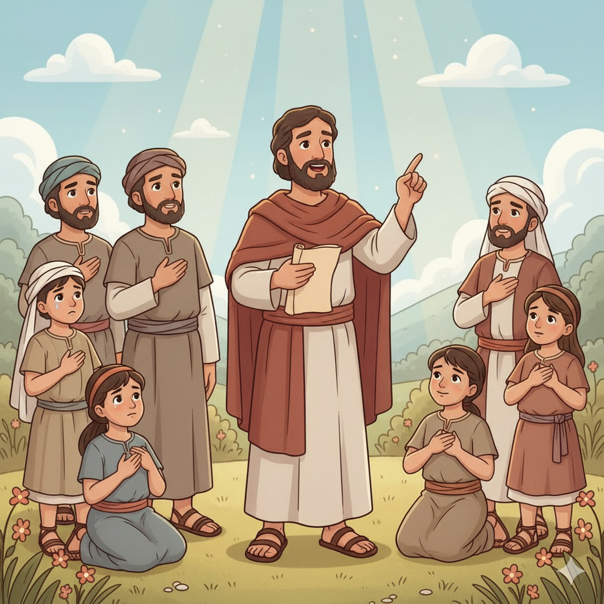
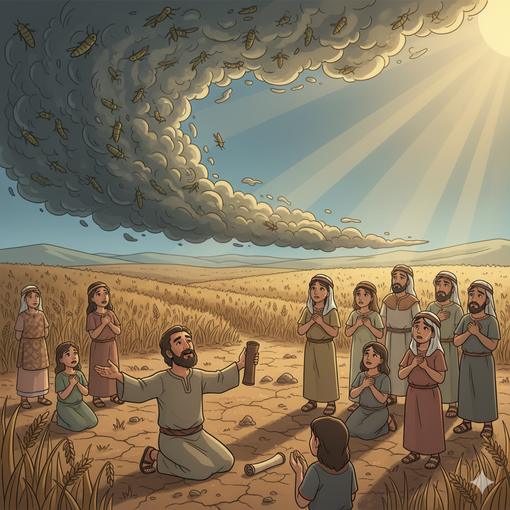
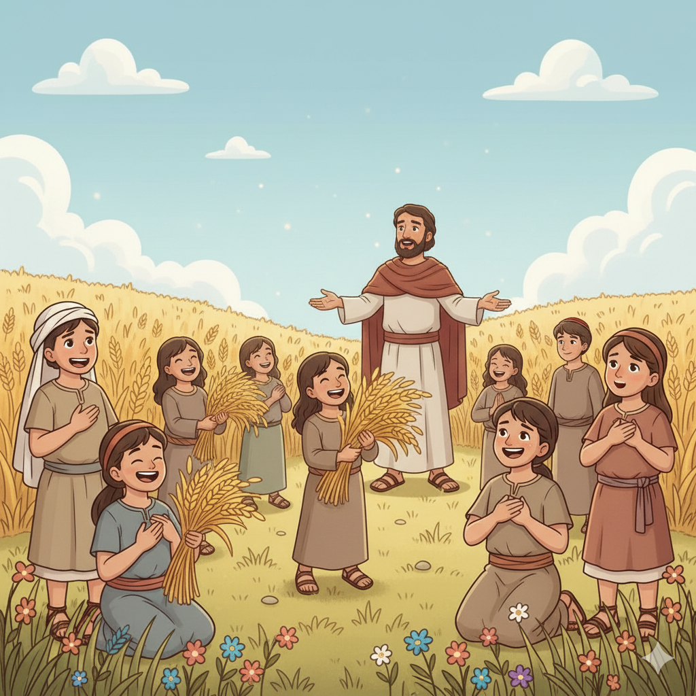
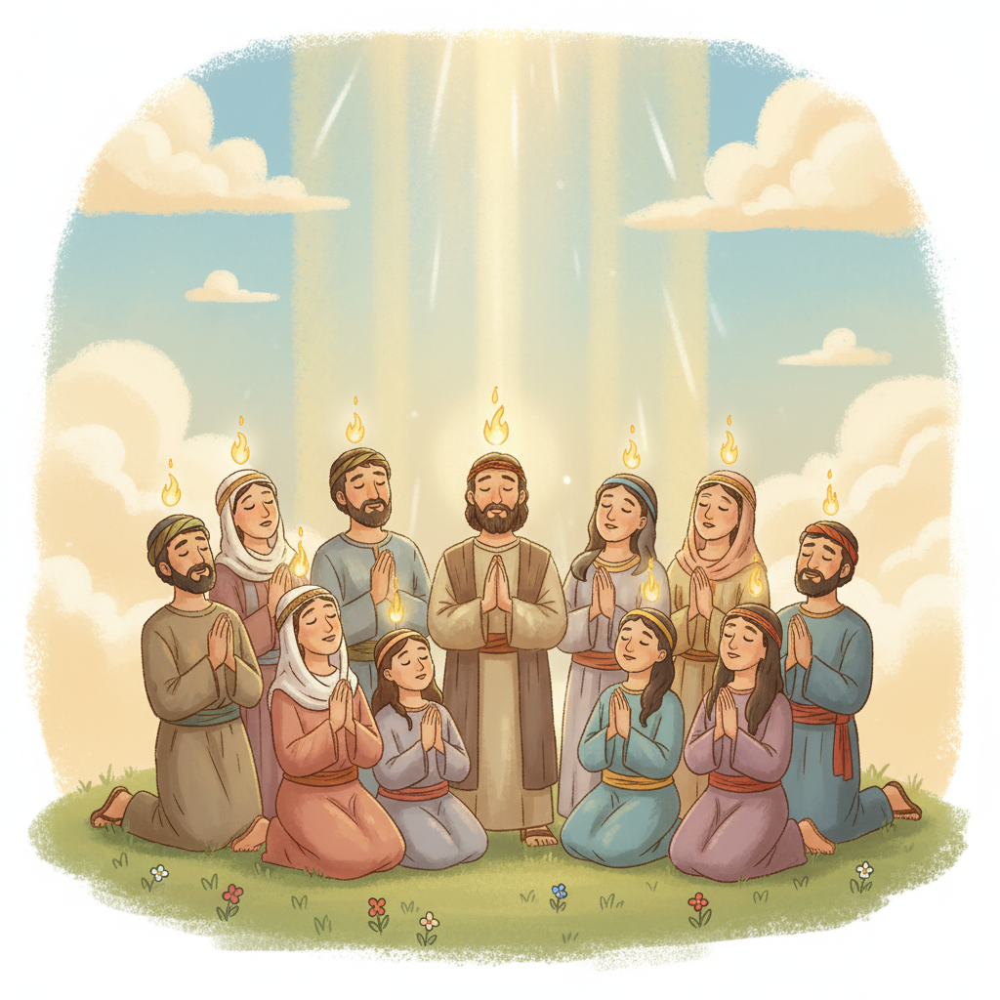
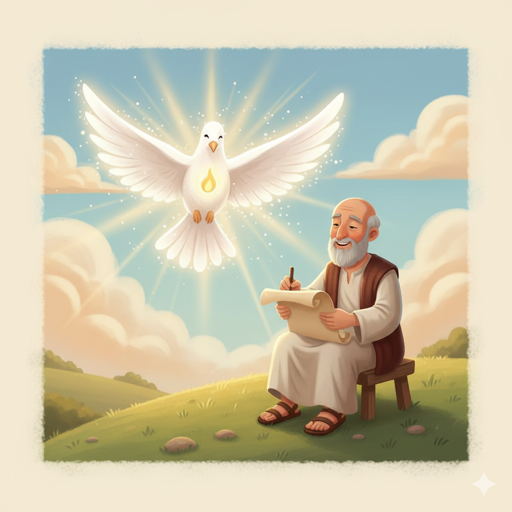

O Dia do Senhor, o Espírito Derramado e a Grande Restauração — Um Resumo Visual para Crianças
Quando os gafanhotos cobriram o céu e o chão,
Joel enxergou aí uma lição!
"Não é acidente — Deus está chamando,
Rasguem o coração e venham voltando!"
Deus pode usar qualquer coisa para nos alcançar,
Quando fecha um caminho, é para nos fazer olhar!
📖 Joel 2:12 — "Ainda agora, diz o Senhor, convertei-vos a mim de todo o vosso coração."
"Derramarei Meu Espírito sobre toda carne!" Deus prometeu,
"Jovens e velhos, homens e mulheres" — que poder que Ele deu!
Antes, só reis e profetas recebiam essa unção,
Mas Joel anunciou: virá para toda geração!
E no dia de Pentecostes Pedro se levantou e falou:
"Isso é o que Joel profetizou — Deus cumpriu o que anunciou!"
📖 Joel 2:28 — "Derramarei o meu Espírito sobre toda a carne." (Citado em Atos 2:17!)
Os gafanhotos comeram os frutos dos anos,
Pareciam perdidos esses tempos tão profanos.
Mas Deus prometeu: "Vou restaurar tudo isso!
O que o inimigo roubou — Eu devolvo. Isso é preciso!"
Não existe perda definitiva para quem confia no Senhor,
Deus restaura os anos roubados com ainda mais esplendor!
📖 Joel 2:25 — "Compensar-vos-ei os anos que foram consumidos pelo gafanhoto."
🕊️
"E acontecerá depois que derramarei o meu Espírito sobre toda a carne; vossos filhos e vossas filhas profetizarão."
Joel 2:28
Quando Pedro se levantou no dia de Pentecostes (Atos 2), ele abriu a Bíblia e leu exatamente esse versículo! Joel profetizou 800 anos antes que o Espírito Santo seria derramado sobre todas as pessoas — não só sobre reis e profetas.
Quase nada sabemos sobre Joel além do seu nome e do nome de seu pai, Petuel. Mas sua mensagem é poderosa: uma crise terrível (a praga de gafanhotos) se torna oportunidade para o povo voltar a Deus e receber bênçãos ainda maiores do que as que perdeu.
📖 Leia na Bíblia — Joel 2:13
"Rasgai o vosso coração, e não as vossas vestes, e convertei-vos ao Senhor, vosso Deus."
A praga de gafanhotos havia devastado as lavouras de Judá — vinhas, figueiras, trigo, tudo destruído. O luto era real. Joel não minimiza a dor, mas chama o povo a enxergar além da crise: é um chamado de Deus para retornar, e a restauração será ainda maior que a perda!
📖 Leia na Bíblia — Joel 1:3
"Contai isso a vossos filhos, e vossos filhos aos seus filhos, e estes filhos à geração seguinte."
Os gafanhotos são os "personagens" que desencadeiam tudo. Joel os descreve em quatro vagas: cortador, enxame, devorador, destruidor. Mas também os usa como imagem de um exército maior — o "Dia do Senhor" — um tempo de juízo e transformação que ainda virá.
📖 Leia na Bíblia — Joel 2:25
"Compensar-vos-ei os anos que foram consumidos pelo gafanhoto."


📖 Leia em casa!
Joel tem apenas 3 capítulos — um dos livros mais curtos da Bíblia! Cap. 2:28-32 tem a profecia mais citada de Joel; Atos 2 mostra seu cumprimento em Pentecostes.
🦗 Parte 1 (Cap. 1–2:17): A Praga e o Lamento
A devastação dos gafanhotos é total — lavouras, vinhas, celebrações, tudo destruído. Joel convoca o povo, os sacerdotes e os anciãos ao lamento e ao arrependimento. É a hora de "rasgar o coração, não as vestes" e voltar a Deus com sinceridade!
📖 Joel 2:12 — "Convertei-vos a mim de todo o vosso coração, e com jejum, e com choro, e com pranto."
🌾 Parte 2 (Cap. 2:18–27): A Promessa de Restauração
Deus responde ao arrependimento com misericórdia! Ele promete restaurar as colheitas, afastar o exército do norte, e — a promessa mais linda — "compensar os anos que os gafanhotos comeram". Deus não apenas perdoa; Ele devolve o que foi perdido!
📖 Joel 2:26 — "E comereis em abundância, e vos fartareis, e louvareis o nome do Senhor vosso Deus."
🕊️ Parte 3 (Cap. 2:28–3:21): O Espírito e o Dia do Senhor
A grande promessa: Deus derramará Seu Espírito sobre toda a carne — filhos e filhas, jovens e velhos, homens e mulheres, servos e servas. O "Dia do Senhor" virá com julgamento das nações, mas os que invocarem o nome do Senhor serão salvos!
📖 Joel 2:32 — "Todo aquele que invocar o nome do Senhor será salvo." (Citado por Paulo em Rm 10:13!)
"Compensar-vos-ei os anos que os gafanhotos comeram" (2:25) é uma das promessas mais poderosas da Bíblia. Ela ensina que nenhuma perda é definitiva com Deus. Quando nos arrependemos, Ele não só perdoa — Ele restaura, compensa e renova!
📖 Joel 2:25
"Compensar-vos-ei os anos que foram consumidos pelo gafanhoto."
No Antigo Testamento, o Espírito de Deus vinha sobre pessoas específicas (reis, profetas, guerreiros). Joel anunciou algo revolucionário: chegaria um dia em que o Espírito seria derramado sobre todas as pessoas, sem distinção. Isso é Pentecostes!
📖 Joel 2:28-29
"Sobre os vossos filhos e as vossas filhas... sobre os servos e as servas derramarei o meu Espírito."
Pedro citou Joel 2:28-32 no primeiro sermão cristão (At 2:17-21). Paulo citou Joel 2:32 em Romanos 10:13. Um profeta do século 9 a.C. forneceu as escrituras que fundaram a pregação cristã!


Joel ensina que Deus usa momentos difíceis para nos chamar de volta. A praga não foi punição sem sentido — foi um convite urgente. Quando algo ruim acontece, Joel pergunta: "O que Deus está dizendo? Qual é o chamado por trás dessa crise?"
📖 Joel 2:13
"Porque ele é misericordioso e compassivo, tardio em irar-se e grande em benignidade."
Joel preparou o povo para entender o que aconteceria séculos depois. A era do Espírito Santo — em que Deus habitaria em cada crente, não apenas em líderes especiais — foi a maior esperança do livro, e se cumpriu em Pentecostes (Atos 2)!
📖 Joel 2:32
"Todo aquele que invocar o nome do Senhor será salvo."
🌟 Lição Principal: Nenhuma crise tem a última palavra quando Deus é o Senhor. Ele transforma devastação em restauração, lamento em alegria, e promete dar mais do que foi perdido. Arrependimento genuíno sempre encontra um Deus generoso!
🎭 Pedro abriu a Bíblia em Joel: No primeiro sermão cristão da história, no dia de Pentecostes, Pedro não citou Isaías nem os Salmos — ele abriu em Joel 2:28! A profecia de 800 anos antes estava sendo cumprida diante dos olhos de todos.
✍️ "Rasguem o coração, não as vestes": No tempo de Joel, rasgar as roupas era sinal de luto. Mas Deus pede algo mais profundo: que rasguemos o coração — que o arrependimento seja real e interno, não só um gesto externo para impressionar!
⚔️ Ao contrário de Isaías: Isaías e Miquéias prometem que na era messiânica as espadas serão transformadas em arados (Isaías 2:4). Joel 3:10 diz o contrário para o dia do julgamento: "Transformai os vossos arados em espadas." Os dois versículos se complementam — há tempo de paz e tempo de batalha final!

Pedro citou Joel 2:28-32 no dia de Pentecostes (Atos 2:17-21) para explicar o que acontecia. O Espírito Santo derramado era a promessa de Joel se cumprindo graças à morte e ressurreição de Jesus!
Paulo citou Joel 2:32 em Romanos 10:13 — "Todo aquele que invocar o nome do Senhor será salvo" — para explicar que a salvação em Jesus está disponível para todos, judeus e gentios.
A promessa de restaurar "os anos que os gafanhotos comeram" aponta para Jesus, que veio para nos dar vida em abundância (Jo 10:10) e restaurar tudo o que o pecado havia destruído.
Pedro cita Joel no primeiro sermão cristão
"Mas Pedro, pondo-se de pé com os onze, levantou a voz e lhes disse... isto é o que foi dito pelo profeta Joel: 'E nos últimos dias... derramarei do meu Espírito sobre toda a carne.'"
📖 Atos 2:14-17
Joel profetizou cerca de 800 anos antes de Pentecostes. A promessa mais extraordinária de Joel se cumpriu exatamente como descrita — e continua se cumprindo em cada crente que recebe o Espírito Santo hoje!
Converse com sua família, turma ou professor sobre essas perguntas!
🦗
Joel via os gafanhotos como um chamado de Deus. Já aconteceu algo difícil na sua vida que te fez se aproximar mais de Deus? O que você aprendeu com isso?
💔
Deus disse: "Rasguem o coração, não as vestes." Qual é a diferença entre se arrepender por fora (só para parecer bom) e se arrepender de verdade por dentro? Como você sabe quando é real?
🌾
Deus prometeu devolver os anos que os gafanhotos comeram. Tem algo na sua vida que parece perdido? Como a promessa de Deus de restaurar te encoraja a continuar confiando Nele?
Escolha um desafio (ou faça os três!) e seja um explorador da Bíblia!
💔
Escolha uma área da sua vida onde você precisa se arrepender de verdade. Converse honestamente com Deus — não apenas diga palavras bonitas, mas fale o que está dentro do coração. Depois espere e ouça!
📖
Leia o sermão de Pedro no dia de Pentecostes. Quando Pedro citar Joel, pare e pense: Joel escreveu isso 800 anos antes e Deus cumpriu! O que isso diz sobre a confiabilidade das promessas de Deus?
✍️
Escreva "Compensar-vos-ei os anos que foram consumidos pelo gafanhoto" e cole onde você vai ver todo dia. Lembre-se dessa promessa quando sentir que perdeu algo que não volta mais!
Trilho Kids | Desenvolvido com ❤️ para crianças © 2025